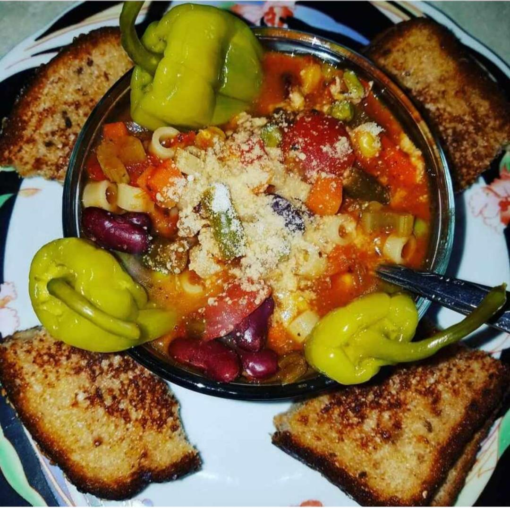

Welcome to the Ms. D Spot
Ms. D Spot is a place where you can come to feed your soul and discover new flavors through catering. meal preparation, and ultimately a restaurant that will satisfy all of your gastronomic desires with international influences infused into Southern cuisine.
What does "food of the soul" mean? I like to call it "soul food." Our hearts and souls are nourished by the things in life that bring us joy and fulfillment, such as meaningful spiritual practices, fulfilling careers, and good relationships. These items have the power to quench our greatest desire for a contented and joyful existence. The soul needs desire to be fed. It has a tone, inflections, ebbs and flows, soft and hard places, joys and sorrows, and pleasure and pain.